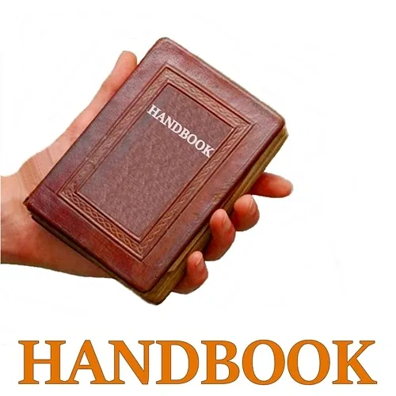

HANDBOOK
- …
HANDBOOK
- …

- Once Upon A Time...- THE BEGINNING- Once upon a time, a naked monkey known as a 'human being' became aware that she was aware. - She noticed that she could notice what she was paying attention to and why: her purpose. - She could put her attention on her attention and notice what she was using to notice with: her thoughtware. - She could decide if the thoughtware she was using was the thoughtware she wanted to use, regardless of whether or not the thoughtware she wanted to use had ever before been used by a human being. By repeatedly engaging in this practice, something remarkable happened. The human being 'woke up' into a subtle but powerfully different state of being in the world. - Other naked monkeys, eating the same food, living in the same tribal culture, had not built the matrix to split their attention and do the same practice of noticing that they are noticing, and noticing what they are noticing with, so they did not have the meta-awareness experience, and they did not know that they did not have it. - Even if the extra-attentive human beings tried to help the original human beings enter the meta-noticing experience, the original human beings could not enter the alternate spaces. They could not engage in - Radical Responsibility.- Over all, there ended up being not so many humans who could shift space. The experiential condition of shifting space turned out to be more rare than was expected, even though entering that space is easy to explain and simple to accomplish. The state was perceived as precious by those who could experience it, but no school or university was teaching what it was or how to prepare yourself, enter, and consciously use those remarkable spaces to create archetypal interactions and intimacies. - It is rumored that long ago for a short time, small groups of people met secretly in underground catecombs for 'Love Feasts'. This could originally have been a space held still and safe enough that it was possible share the experience of Countenance. But during those times, water was not purified enough to drink, so most people drank wine. One sip of wine contains enough alcohol to block the Waking State and prevent the experience of Countenance. Since the participants wanted the Love Feast spaces to continue but did not know how to assure this, participants reverted to using orgiastic sex and/or psychoactive substances which could be counted upon to create an experience that is somewhat reproducible, but lacks the authentic and Radically Responsible value of the Waking State. This confusion may have delayed the emergence of a reliable - Handbookfor several centuries, if not a millennia or more.- Some few of the space shifters had a knack for refining - distinctionsand inventing- practicesto capture them memetically in written or graphic form. They took voracious notes amongst themselves, collecting them for decades, for their whole lives. Their treasure continues to grow.- Not everyone is a - gameworld builder. Not everyone can create an infrastructure into which other people can shift- contextand engage in new lifestyle and level of awareness. We regard ourselves as culture builders, able to build infrastructure that can support thousands or even millions of people living in a new cultural- context.- How do you deepen the context of your culture so it becomes resilient and dense enough to hold a new culture, specifically Archiarchy? The more mass you have in your culture, the more people can be attracted to your projects. - In nonlinear and chaotic ways, how can you gain more mass and deepen the context of this next culture - Archiarchy - where it is commonly possible to take Radical Responsibility, where war is a crime, where - Regenerating Earthand experiencing authentic adulthood initiatory processes using- nonmaterial economicsare central activities.- Building-block distinctions have been discovered. Authentic adulthood healing and initiatory processes for 21st Century's degree of chaos have been developed and applied. The set of conditions in which these practices can produce valuable outcomes is ongoingly evolving, so it was discovered that new and evolving practices must be ongoingly invented and refined. - A compendium of these notes eventually emerged as a 'Handbook', the first handbook, perhaps hand copied by a monk on parchment in a monastary, and carefully protected from being burned by fanatics or fundamentalists. Various versions of these ideas were encoded in cryptic vocabulary, religious dogmas, symbollic hermetic formulas, so-called witchcraft manuals, and magyck books. Many of these manscripts were classified as heretical doctrines and were destroyed during pogroms such as when the libraries were burned in Alexandria, Egypt, first by the Christians and then by the Muslims, as well by Hitler in Nazi Germany, and in China under Mao Tse Tung. - Scholars and seekers have searched for such handbooks. Few manuscripts have provided useful information, especially given how modern culture and climate are both rapidly degrading stability. Many people have resigned themselves to the disempowering Zombie doctrines promoted by modern culture's capitalist patriarchal empire and simply try to survive in cities or climb political or corporate hierarchies. - The condition of your gameworld mirrors your own inner structure and creative resilience as a gameworld builder. Your gameworld will change or evolve or amplify in a one-to-one correspondence with how you change, evolve, or amplify your Inner Structure, Resilient Innocence, and Agency. - How you are structured inside determines the kind of gameworld you can build. For your gameworld to evolve depends on you evolving your structure on your inside through Emotionsl Healing Processes (EHP), thoughtware upgrades, memetic surgeries, energetic block removals, bypassing Mind Machines, sewing up Brainsplits, leaving behind the - Lone Wolf (archived — not captured)or the- Disjointment- Survival Strategies, etc.- YOUR BEGINNING- There comes a time on your evolving Path of consciousness when it is no longer satisfying enough to go along with the automatic worldview handed down to you from generation after generation. The old familiar beliefs no longer make sense. The values are suddenly so shallow, selfish, and short sighted. Something completely different is obviously possible for human beings on Earth. Something vastly more alive, tingling with an abundance of unknown options to choose from. - Where were these new options all this time? They were right here, where they are now, waiting for you to see them, to try them out, to experiment with them and further expand them yourself, for others, for the future, for Gaia. - Where were you all this time? You were hypnotized, surviving, trying to fit in, playing small, trying to be a good person, a nice girl or a good boy, or trying to follow in your patriarchal father's footsteps, trying to get all you can and give nothing back. You were the caterpillar in the crysallis, the yolk inside of the protective bird egg. - But your survival space has been feeling tighter and tighter, right? Smaller and smaller, cramped, rigid, restrictive. A part of you has been wanting to come alive and get about creating what you came here to create. Your Archetypal Lineage is feeling impatient about getting to work. - Your Part In All This... - How To Use The Handbook On The Path- The- Path- is made by walking it. The Handbook is made by practicing it.- Yes, there is more than one path up the Mountain... but, there is no Mountain.- Each step along the Path is an Experiment that you do.- No Experiments? No steps.- No one can Experiment for you.- More interestingly, no one can stop you from Experimenting.- Experimenting builds Matrix for collecting more consciousness.- With more consciousness, you see more options to choose from, including the frightening ones.- What you decide, however, is still up to you. - CAVITATE AND HOLD SPACE FOR YOU TO DO EXPERIMENTS IN THE HANDBOOK ON YOUR PATH- Matrix Code - HANDBOOK.00 - SHIFT IDENTITY TO BECOME A HANDBOOK EXPERIMENTER AND PROVE IT BY ONGOINGLY REPORTING ABOUT YOUR CURRENT EXPERIMENTS- Matrix Code - HANDBOOK.00
- CAVITATE AND HOLD SPACE FOR YOU TO DO EXPERIMENTS IN THE HANDBOOK ON YOUR PATH- Matrix Code - HANDBOOK.00 - SHIFT IDENTITY TO BECOME A HANDBOOK EXPERIMENTER AND PROVE IT BY ONGOINGLY REPORTING ABOUT YOUR CURRENT EXPERIMENTS- Matrix Code - HANDBOOK.00 - ### Title Text- Matrix Code - HANDBOOK.00 - ### Title Text- Matrix Code - HANDBOOK.00 - ### Title Text- Matrix Code - HANDBOOK.00 - ### Title Text- Matrix Code - HANDBOOK.00
- NOTE:This website is a- Bubble in the Bubble Mapof the free-to-play massively-multiplayeronline-and-offline thoughtware-upgrade matrix-building personal-transformation real-life adventure-game called- StartOver.xyz. It is a- doorwayto- experimentsthat- upgrade your thoughtwareso you can relocate your- point of originand- createmore- possibility. Your- knowledgeis what youthink about. Your- thoughtwareis what you useto think with. When you- change your thoughtware,you go through a- liquid stateas your mind- reorganizesitself. Liquid states can bring uptransformational- feelingsand- emotions. By- upgrading your thoughtwareyou- build matrixto hold more- consciousness (archived — not captured)and leave behind a- low dramalife of- reactivity. No one can upgrade yourthoughtware for you. More interestingly, no one can stop you from upgrading your thoughtware. Our theory is that when we- collectively build1,000,000 new Matrix Points wewill change the morphogenetic field of the human race for the better. Please choose- responsiblyto read this website. Reading thiswhole website is worth 1 Matrix Point. Doing any of the experiments earns you additional Matrix Points. Please use Matrix Code- HANDBOOK.00to log your Matrix Point for reading this website on- StartOver.xyz. Thank you for playing full out!
- ### Title Text- Matrix Code - HANDBOOK.00 - ### Title Text- Matrix Code - HANDBOOK.00 - ### Title Text- Matrix Code - HANDBOOK.00 - ### Title Text- Matrix Code - HANDBOOK.00
- NOTE:This website is a- Bubble in the Bubble Mapof the free-to-play massively-multiplayeronline-and-offline thoughtware-upgrade matrix-building personal-transformation real-life adventure-game called- StartOver.xyz. It is a- doorwayto- experimentsthat- upgrade your thoughtwareso you can relocate your- point of originand- createmore- possibility. Your- knowledgeis what youthink about. Your- thoughtwareis what you useto think with. When you- change your thoughtware,you go through a- liquid stateas your mind- reorganizesitself. Liquid states can bring uptransformational- feelingsand- emotions. By- upgrading your thoughtwareyou- build matrixto hold more- consciousness (archived — not captured)and leave behind a- low dramalife of- reactivity. No one can upgrade yourthoughtware for you. More interestingly, no one can stop you from upgrading your thoughtware. Our theory is that when we- collectively build1,000,000 new Matrix Points wewill change the morphogenetic field of the human race for the better. Please choose- responsiblyto read this website. Reading thiswhole website is worth 1 Matrix Point. Doing any of the experiments earns you additional Matrix Points. Please use Matrix Code- HANDBOOK.00to log your Matrix Point for reading this website on- StartOver.xyz. Thank you for playing full out!